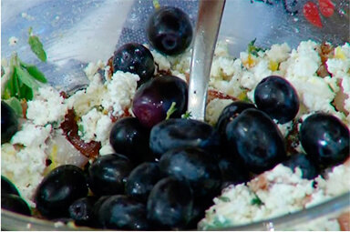

Приготовление: 1 час
Рецепт на: 3 персоны
Описание H2
Вместо грудинки подойдет сало с мясными прослойками, а свежий тимьян и орегано можно заменить прованскими травами. Если нет варенья из инжира, возьмите сушеный и замочите его ненадолго в крепком чае или немного поварите в кипятке.
Маринованные виноградные листья перед приготовлением нужно промыть, а затем просушить:
- И с начинкой тоже можно экспериментировать;
- Его можно приготовить на основе картофельного пюре;
- Зразы очень вкусное блюдо, которое напоминает котлеты, но не самые простые, а с начинкой. Фарш может быть самым разным: говяжьим, свиным, куриным, смешанным.
Ингредиенты H3
- курица весом 1,5 кг
- лимоны — 1 шт.
- грудинка копченая — 50 гр.
- черный виноград без косточек — 1 горсть
- орегано свежий — 2 веточки
- тимьян свежий — 2 веточки
- перец черный свежемолотый — 2 щепотки
Пошаговый рецепт приготовления H3
-
Духовку предварительно разогреть до 200°С.
-
Приготовить начинку: творог размять вилкой, добавить листья орегано и тимьяна, посолить, поперчить.
-
Плоды инжира порвать руками и добавить к творогу с зеленью.
-
Грудинку порезать маленькими кусочками.
-
Цедру лимона натереть на мелкой терке.
-
Нарезанную грудинку, цедру и ягоды винограда добавить к творогу с инжиром, все тщательно перемешать.
 -
Виноградные листья сложить внахлест по два-три, выложить на них начинку и свернуть рулетиками.
-
Внутрь каждого цыпленка поместить по одному рулету и по две-три веточки оставшегося орегано и тимьяна.
Дно небольшой формы для выпечки выстелить оставшимися виноградными листьями, выложить фаршированных цыплят грудками вверх, рядом поместить оставшиеся творожные рулетики.
Цитата H4
Мы упускаем из виду, что наша жизнь — всего лишь миг и этот краткий миг необходимо сделать как можно более прекрасным и совершенным
Андре Моруа. Письма незнакомке
Заголовок H5
Чичиков поднял несколько бровь, услышав такое отчасти греческое имя, которому, неизвестно почему, Манилов дал окончание на «юс», но постарался тот же час привесть лицо в обыкновенное положение.
Заголовок H6
Наконец Манилов поднял трубку с чубуком и поглядел снизу ему в лицо, стараясь высмотреть, не видно ли какой усмешки на губах его, не пошутил ли он; но ничего не было видно такого, напротив, лицо даже казалось степеннее обыкновенного.


какое необычное сочетание!
Виноград очень добавляет пикантность блюду. Положила две веточки по 10 штук в блюдо для украшения при готовке. Бекон лучше положить на курочку за 20 мин до окончания запекания. Блюдо очень вкусное и необычное, достойно новогоднего стола.
Цыплята получились — супер!